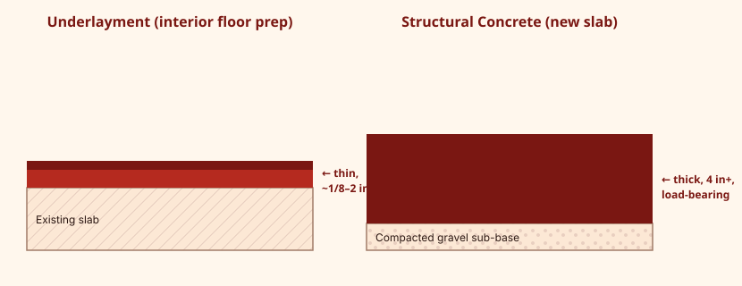

Self-leveling underlayment is a cementitious compound formulated specifically to flatten and smooth a subfloor before flooring installation, rather than to bear structural load. It's the right choice for most interior floor-prep jobs; deeper structural repairs need a different, structurally rated product.

What Underlayment Is
Underlayment products are engineered to flow into a thin, flat, hard surface that flooring can be installed over. They're generally lighter-duty than structural concrete, optimized for smooth trowel-free application, fast walkable times, and good bond to a wide range of interior substrates.
Underlayment vs. Structural Self-Leveling Concrete
Structural self-leveling concrete (sometimes marketed as a deep-pour or repair-grade compound) is formulated to handle greater depth and, in some cases, light structural repair. The dividing line isn't always obvious from the bag name alone — check the technical data sheet for rated depth and intended use rather than assuming from the product name.

When You Actually Need It
| Situation | Underlayment fits? |
|---|---|
| Leveling a slightly uneven slab before tile | Yes — this is the primary use case |
| Encapsulating radiant heat tubing | Yes, with a product rated for that application |
| Filling a large structural void or repairing a cracked slab | Usually no — needs a repair-grade or structural product |
| Exterior grading or slopes | No — interior underlayments are not rated for exterior exposure |
Compatible Substrates
Most underlayments bond to cured concrete, some plywood substrates (with the correct primer and sometimes a reinforcing mesh), ceramic tile, and terrazzo. Always confirm substrate compatibility and any required primer or mesh on the manufacturer's instructions — wood substrates in particular often have additional requirements around deflection and thickness.
Installation Notes
Installation follows the same general sequence as any self-leveling pour: prep, prime, mix to spec, pour, and protect during cure. See How to Use Self-Leveling Concrete for the full walkthrough.
Frequently Asked Questions
Is underlayment strong enough for heavy foot traffic?
Cured underlayment is hard and durable enough to walk on and to serve as a flooring substrate, but it is not intended to be a structural, load-bearing layer on its own.
Can I put underlayment directly over plywood?
Many products can go over sound plywood with the correct primer, but always confirm deflection limits and any reinforcing mesh requirement in the manufacturer's instructions.
Related Guides
Sources & References
- Manufacturer technical data sheets for underlayment vs. structural product classifications